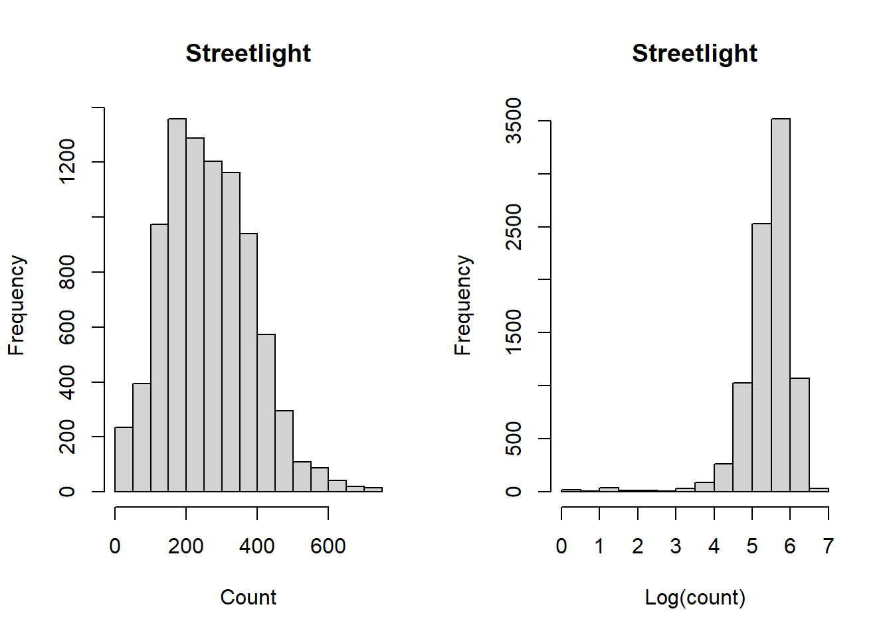

Chapter 3 ANOVA test for streetlights


## Df Sum Sq Mean Sq F value Pr(>F)
## habneigh1 1 39020897 39020897 3328 <2e-16 ***
## Residuals 8735 102430477 11726
## ---
## Signif. codes: 0 '***' 0.001 '**' 0.01 '*' 0.05 '.' 0.1 ' ' 1ANOVA test for Log transformed streetlight counts
## Df Sum Sq Mean Sq F value Pr(>F)
## habneigh1 1 730 729.6 1817 <2e-16 ***
## Residuals 8694 3491 0.4
## ---
## Signif. codes: 0 '***' 0.001 '**' 0.01 '*' 0.05 '.' 0.1 ' ' 13.1 Analysis without outliers
There were 13 CCDs with grater than 1000 streetlight counts, other CCDs have less than 800 streetlight counts.

## Df Sum Sq Mean Sq F value Pr(>F)
## habneigh1 1 36286020 36286020 3300 <2e-16 ***
## Residuals 8722 95897951 10995
## ---
## Signif. codes: 0 '***' 0.001 '**' 0.01 '*' 0.05 '.' 0.1 ' ' 1ANOVA test for Log transformed streetlight counts
## Df Sum Sq Mean Sq F value Pr(>F)
## habneigh1 1 710 709.8 1772 <2e-16 ***
## Residuals 8681 3478 0.4
## ---
## Signif. codes: 0 '***' 0.001 '**' 0.01 '*' 0.05 '.' 0.1 ' ' 1